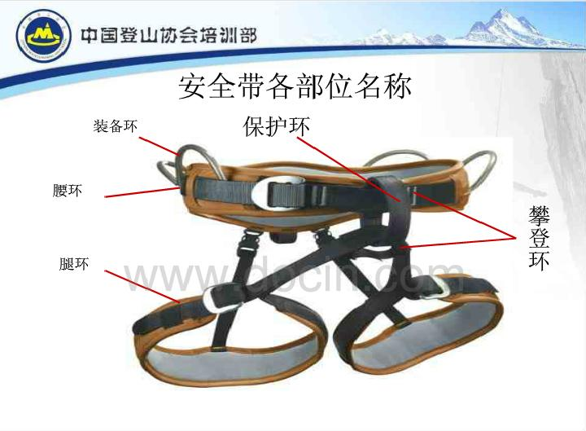

发信人: lllxxl (lllxxl), 信区: outdoor
标 题: Re: 现在攀岩队伍壮大起来没
发信站: 饮水思源 (2014年10月30日12:22:41 星期四)
先贴个图，明确一下保护环和攀登环所指的是什么 screen.width - 200){this.width = screen.width - 200}">
楼主所说的tie-in loop 和leg loop cross piece合起来算攀登环；belay loop是保护环
主帖的意思是，推荐的方式有两种：
1、用八字反穿结，系攀登环
2、用双锁，系保护环
现在问题来了……
如果用8字节，系保护环，会有什么危险因素吗？
如果用双锁，系攀登环，是否可能产生横向受力或其他危险因素？
大家指点一下
【 在 tweetyj 的大作中提到: 】
: 现在交大攀岩的人多不多啊？听说建了岩壁，效果怎么样啊~~
: P.S.
: 刚才逛微博看到两个图，突然想起来在华师大攀岩的时候，好多人都是把主锁穿在ti..
: loop和leg loop cross piece里面，这个方法不是最安全的哦，一般锁都是放在bel..
: oop里面的，只有绳子和编带等软的才放进tie-in loop和leg loop cross piece里面..
: 岩安全最重要，大家要注意哦。
: 下面两种是“推荐”的方式。
: http://bbs.sjtu.edu.cn../htm/pics/1414506502308061.jpg
: http://bbs.sjtu.edu.cn../htm/pics/141450651011140.jpg
--
天高地阔任我行
※ 来源:·饮水思源 bbs.sjtu.edu.cn·[FROM: 122.226.0.10]
|